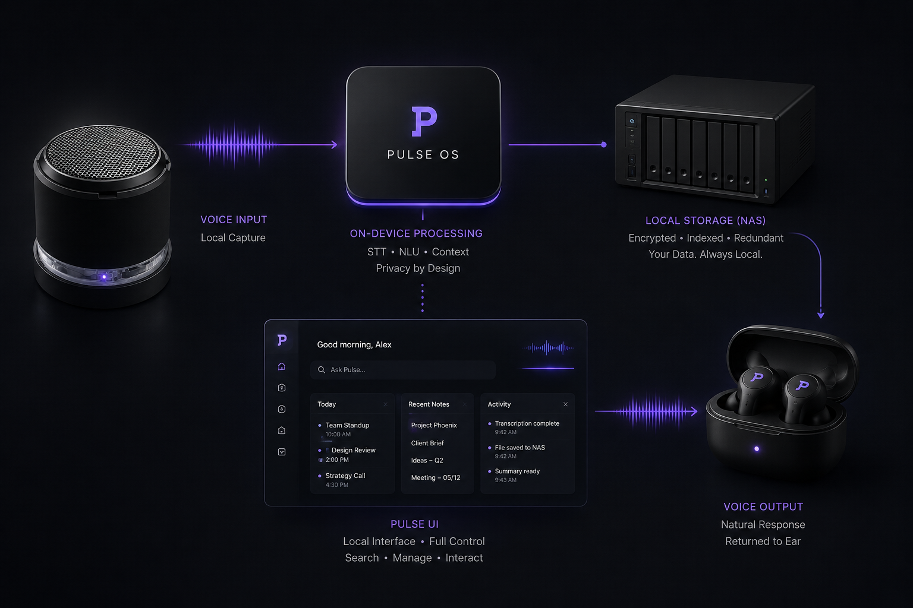

Context becomes action
Signals from rooms, devices, media, messages, and publishing workflows are interpreted as part of one operating context.
A home platform built around ambient context.
Voice, media, publishing, and environment connected through one adaptive intelligence layer.

Pulse connects voice endpoints, participant context, media systems, website content, local services, and screens into one calm home platform. AI-assisted decision support, behavioural memory, and cross-system awareness make the experience feel continuous.
Signals from rooms, devices, media, messages, and publishing workflows are interpreted as part of one operating context.
Pulse can draft, organise, queue, and recommend while keeping public and external actions deliberate.
Life, publishing, music, viewing, and physical endpoints share context so each surface becomes more useful over time.

Behaviour-aware assistance for open loops, timing, private prompts, and context-aware interruption.

Publishing intelligence for websites, updates, media, social drafts, and narrative continuity.

Music discovery, local catalogue intelligence, voice requests, room context, and adaptive queues.

An AI-native viewing layer for faster decisions, shared memory, launcher direction, and visual remote.

Voice endpoints, local compute, storage, screens, room signals, and private output in one controlled loop.
The local layer lets Pulse hear, interpret, decide, display, and respond inside the environment where context actually exists.
The point is control. Pulse can connect voice and screens while keeping private context local and making public actions deliberate.
Participant context, music state, viewing patterns, and voice interaction become shared signals across the platform.
Website content, publishing queues, social drafts, media assets, and ecosystem changes stay aligned through one workflow.
Voice endpoints, local machines, storage, and private output form the base that every Pulse surface connects to.
Requisite Vinyl is an independent collection-management project. It demonstrates data modelling, metadata enrichment, admin tooling, and static publishing workflows in a separate development stream.